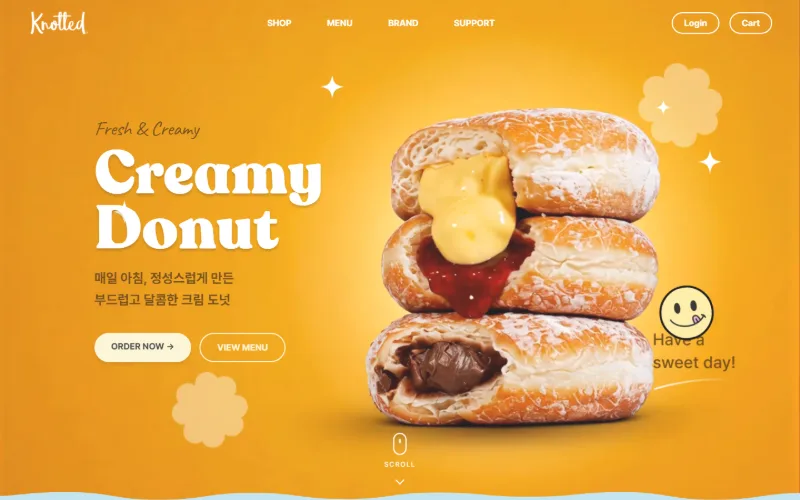

KnottedDonut — 도넛 브랜드 쇼핑몰
- 9개 페이지 메인 · 메뉴 · 온라인샵 · 장바구니 · 결제 · 마이페이지 등
- 반응형 PC와 모바일 모두 가로 넘침 없이 맞춤
- 스크롤 연출 GSAP · ScrollTrigger · Lenis
- 주문 흐름 장바구니 → 결제 → 영수증을 서버 없이 localStorage 로 구현한 시연용 흐름
- 구조 CSS · JS 를 공통 / 컴포넌트 / 페이지로 나눠 필요한 것만 불러옴
노티드(Knotted) 브랜드를 재해석한 비상업 학습용 작업입니다.